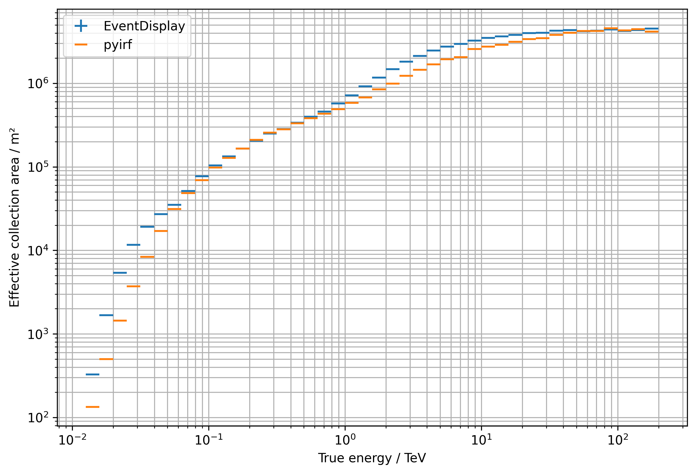
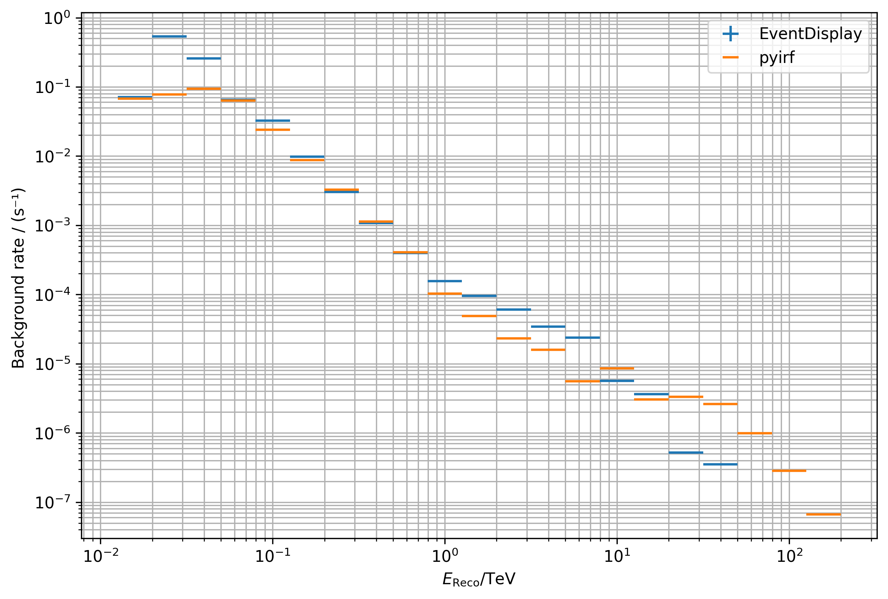

Comparison with EventDisplay¶
Purpose of this notebook:
Compare IRF and Sensitivity as computed by pyirf and EventDisplay on the same DL2 results
Notes:
The following results correspond to:
Paranal site
Zd 20 deg, Az 180 deg
50 h observation time
Resources:
EventDisplay DL2 data, https://forge.in2p3.fr/projects/cta_analysis-and-simulations/wiki/Eventdisplay_Prod3b_DL2_Lists
Download and unpack the data using
$ curl -fL -o data.zip https://nextcloud.e5.physik.tu-dortmund.de/index.php/s/Cstsf8MWZjnz92L/download
$ unzip data.zip
$ mv eventdisplay_dl2 data
Table of contents¶
[1]:
import os
import numpy as np
import uproot
from astropy.io import fits
import astropy.units as u
import matplotlib.pyplot as plt
from astropy.table import QTable
from matplotlib.ticker import ScalarFormatter
from pyirf.binning import bin_center
%matplotlib inline
/usr/local/lib/python3.8/site-packages/setuptools_scm/git.py:88: UserWarning: "/github/workspace" is shallow and may cause errors
warnings.warn(f'"{wd.path}" is shallow and may cause errors')
/usr/local/lib/python3.8/site-packages/traitlets/traitlets.py:3030: FutureWarning: --rc={'figure.dpi': 300} for dict-traits is deprecated in traitlets 5.0. You can pass --rc <key=value> ... multiple times to add items to a dict.
warn(
[2]:
plt.rcParams['figure.figsize'] = (9, 6)
[3]:
# Path of EventDisplay IRF data in the user's local setup
# Please, empty the indir_EventDisplay variable before pushing to the repo
indir = "../../data/"
irf_file_event_display = "DESY.d20180113.V3.ID0NIM2LST4MST4SST4SCMST4.prod3b-paranal20degs05b-NN.S.3HB9-FD.180000s.root"
irf_eventdisplay = uproot.open(os.path.join(indir, irf_file_event_display))
The following is the current IRF + sensititivy output FITS format provided by this software.
Run python examples/calculate_eventdisplay_irfs.py after downloading the data
[4]:
pyirf_file = '../../pyirf_eventdisplay.fits.gz'
Optimized cuts¶
Direction cut¶
[5]:
from astropy.table import QTable
rad_max = QTable.read(pyirf_file, hdu='RAD_MAX')[0]
theta_cut_ed, edges = irf_eventdisplay['ThetaCut;1'].to_numpy()
plt.errorbar(
bin_center(10**edges),
theta_cut_ed,
xerr=np.diff(10**edges),
ls='',
label='EventDisplay',
)
plt.errorbar(
0.5 * (rad_max['ENERG_LO'] + rad_max['ENERG_HI'])[1:-1].to_value(u.TeV),
rad_max['RAD_MAX'].T[1:-1, 0].to_value(u.deg),
xerr=0.5 * (rad_max['ENERG_HI'] - rad_max['ENERG_LO'])[1:-1].to_value(u.TeV),
ls='',
label='pyirf',
)
plt.legend()
plt.ylabel('θ-cut / deg²')
plt.xlabel(r'$E_\mathrm{reco} / \mathrm{TeV}$')
plt.xscale('log')
None # to remove clutter by mpl objects
[6]:
from astropy.table import QTable
gh_cut = QTable.read(pyirf_file, hdu='GH_CUTS')[1:-1]
plt.errorbar(
0.5 * (gh_cut['low'] + gh_cut['high']).to_value(u.TeV),
gh_cut['cut'],
xerr=0.5 * (gh_cut['high'] - gh_cut['low']).to_value(u.TeV),
ls='',
label='pyirf',
)
plt.legend()
plt.ylabel('G/H-cut')
plt.xlabel(r'$E_\mathrm{reco} / \mathrm{TeV}$')
plt.xscale('log')
None # to remove clutter by mpl objects
Differential sensitivity from cuts optimization¶
[7]:
# [1:-1] removes under/overflow bins
sensitivity = QTable.read(pyirf_file, hdu='SENSITIVITY')[1:-1]
# make it print nice
sensitivity['reco_energy_low'].info.format = '.3g'
sensitivity['reco_energy_high'].info.format = '.3g'
sensitivity['reco_energy_center'].info.format = '.3g'
sensitivity['relative_sensitivity'].info.format = '.2g'
sensitivity['flux_sensitivity'].info.format = '.3g'
for k in filter(lambda k: k.startswith('n_'), sensitivity.colnames):
sensitivity[k].info.format = '.1f'
sensitivity
[7]:
QTable length=21
| reco_energy_low | reco_energy_high | reco_energy_center | n_signal | n_signal_weighted | n_background | n_background_weighted | n_electron | n_electron_weighted | n_proton | n_proton_weighted | significance | relative_sensitivity | flux_sensitivity |
|---|---|---|---|---|---|---|---|---|---|---|---|---|---|
| TeV | TeV | TeV | 1 / (cm2 s TeV) | ||||||||||
| float64 | float64 | float64 | float64 | float64 | float64 | float64 | float64 | float64 | float64 | float64 | float64 | float64 | float64 |
| 0.0126 | 0.02 | 0.0163 | 321.1 | 611.2 | 114.0 | 61070.0 | 21.0 | 6030.1 | 93.1 | 55039.9 | 5.00000000000191 | 0.084 | 1.16e-07 |
| 0.02 | 0.0316 | 0.0258 | 466.2 | 696.1 | 225.0 | 69613.1 | 140.1 | 27815.4 | 84.9 | 41797.7 | 5.334366133300075 | 0.034 | 1.39e-08 |
| 0.0316 | 0.0501 | 0.0409 | 695.6 | 840.7 | 358.9 | 84074.3 | 256.9 | 35211.9 | 102.0 | 48862.5 | 5.862315649056272 | 0.018 | 2.24e-09 |
| 0.0501 | 0.0794 | 0.0648 | 628.9 | 591.4 | 289.9 | 57141.7 | 198.6 | 17308.6 | 91.3 | 39833.1 | 5.000000000001035 | 0.0071 | 2.62e-10 |
| 0.0794 | 0.126 | 0.103 | 525.3 | 367.0 | 221.7 | 21743.8 | 191.1 | 10548.7 | 30.5 | 11195.1 | 5.000000000000102 | 0.0042 | 4.63e-11 |
| 0.126 | 0.2 | 0.163 | 428.4 | 223.5 | 128.8 | 7895.1 | 117.0 | 4160.2 | 11.8 | 3734.9 | 5.000000000000102 | 0.0033 | 1.09e-11 |
| 0.2 | 0.316 | 0.258 | 351.6 | 138.5 | 81.6 | 2934.3 | 76.6 | 1754.3 | 5.0 | 1180.0 | 5.000000000002407 | 0.0028 | 2.77e-12 |
| 0.316 | 0.501 | 0.409 | 282.6 | 84.2 | 47.2 | 1023.9 | 44.9 | 637.5 | 2.2 | 386.4 | 5.000000000071256 | 0.0027 | 7.86e-13 |
| 0.501 | 0.794 | 0.648 | 235.4 | 52.7 | 30.3 | 366.8 | 29.3 | 233.0 | 1.0 | 133.8 | 5.000000000757095 | 0.0026 | 2.3e-13 |
| 0.794 | 1.26 | 1.03 | 175.3 | 29.3 | 18.1 | 92.6 | 17.9 | 72.7 | 0.2 | 19.9 | 5.000000000001959 | 0.0023 | 6.18e-14 |
| 1.26 | 2 | 1.63 | 175.2 | 22.0 | 15.5 | 44.0 | 15.3 | 30.0 | 0.2 | 13.9 | 5.000000000285535 | 0.0027 | 2.11e-14 |
| 2 | 3.16 | 2.58 | 178.6 | 16.9 | 14.8 | 20.8 | 14.7 | 12.8 | 0.1 | 8.1 | 5.0 | 0.0029 | 6.98e-15 |
| 3.16 | 5.01 | 4.09 | 209.6 | 15.0 | 12.7 | 14.2 | 12.5 | 4.8 | 0.2 | 9.5 | 5.0 | 0.0038 | 2.67e-15 |
| 5.01 | 7.94 | 6.48 | 209.3 | 11.3 | 9.8 | 5.0 | 9.7 | 1.5 | 0.1 | 3.5 | 5.0 | 0.0048 | 1.01e-15 |
| 7.94 | 12.6 | 10.3 | 309.7 | 12.5 | 7.9 | 7.7 | 7.6 | 0.5 | 0.3 | 7.2 | 5.0 | 0.0082 | 5.23e-16 |
| 12.6 | 20 | 16.3 | 329.9 | 10.0 | 5.1 | 2.7 | 4.9 | 0.1 | 0.2 | 2.6 | 5.025378399198689 | 0.012 | 2.35e-16 |
| 20 | 31.6 | 25.8 | 442.2 | 10.1 | 4.6 | 3.0 | 4.4 | 0.1 | 0.2 | 2.9 | 4.999999999999999 | 0.023 | 1.31e-16 |
| 31.6 | 50.1 | 40.9 | 585.2 | 10.0 | 2.6 | 2.4 | 2.4 | 0.0 | 0.2 | 2.3 | 5.112604025721378 | 0.043 | 7.34e-17 |
| 50.1 | 79.4 | 64.8 | 778.9 | 10.0 | 1.8 | 0.9 | 1.7 | 0.0 | 0.1 | 0.9 | 5.532269535830046 | 0.082 | 4.15e-17 |
| 79.4 | 126 | 103 | 1044.3 | 10.0 | 1.0 | 0.3 | 0.9 | 0.0 | 0.0 | 0.3 | 5.806860845570542 | 0.17 | 2.59e-17 |
| 126 | 200 | 163 | 1403.9 | 10.0 | 0.4 | 0.1 | 0.4 | 0.0 | 0.0 | 0.1 | 5.930024608961363 | 0.36 | 1.65e-17 |
[8]:
plt.figure(figsize=(12,8))
# Get data from event display file
y, edges = irf_eventdisplay["DiffSens"].to_numpy()
yerr = irf_eventdisplay["DiffSens"].errors()
bins = 10**edges
x = bin_center(bins)
width = np.diff(bins)
fig, (ax_sens, ax_ratio) = plt.subplots(
2, 1,
gridspec_kw={'height_ratios': [4, 1]},
sharex=True,
)
ax_sens.errorbar(
x,
y,
xerr=width/2,
yerr=yerr,
label="EventDisplay",
ls=''
)
unit = u.Unit('erg cm-2 s-1')
e = sensitivity['reco_energy_center']
w = (sensitivity['reco_energy_high'] - sensitivity['reco_energy_low'])
s = (e**2 * sensitivity['flux_sensitivity'])
ax_sens.errorbar(
e.to_value(u.TeV),
s.to_value(unit),
xerr=w.to_value(u.TeV) / 2,
ls='',
label='pyirf'
)
ax_ratio.errorbar(
e.to_value(u.TeV), s.to_value(unit) / y,
xerr=w.to_value(u.TeV)/2,
ls=''
)
ax_ratio.set_yscale('log')
ax_ratio.set_xlabel("Reconstructed energy / TeV")
ax_ratio.set_ylabel('pyirf / eventdisplay')
ax_ratio.grid()
ax_ratio.yaxis.set_major_formatter(ScalarFormatter())
ax_ratio.set_ylim(0.5, 2.0)
ax_ratio.set_yticks([0.5, 2/3, 1, 3/2, 2])
ax_ratio.set_yticks([], minor=True)
# Style settings
ax_sens.set_title('Minimal Flux Satisfying Requirements for 50 hours')
ax_sens.set_xscale("log")
ax_sens.set_yscale("log")
ax_sens.set_ylabel(rf"$(E^2 \cdot \mathrm{{Flux Sensitivity}}) /$ ({unit.to_string('latex')})")
ax_sens.grid(which="both")
ax_sens.legend()
fig.tight_layout(h_pad=0)
None # to remove clutter by mpl objects
<Figure size 3600x2400 with 0 Axes>
IRFs¶
Effective area¶
[9]:
# Data from EventDisplay
y, edges = irf_eventdisplay["EffectiveAreaEtrue"].to_numpy()
yerr = irf_eventdisplay["EffectiveAreaEtrue"].errors()
x = bin_center(10**edges)
xerr = 0.5 * np.diff(10**edges)
plt.errorbar(x, y, xerr=xerr, yerr=yerr, ls='', label="EventDisplay")
# uncomment the other strings to see effective areas
# for the different cut levels. Left out here for better
# visibility of the final effective areas.
suffixes = [
''
# '_NO_CUTS',
# '_ONLY_GH',
# '_ONLY_THETA',
]
for suffix in suffixes:
area = QTable.read(pyirf_file, hdu='EFFECTIVE_AREA' + suffix)[0]
plt.errorbar(
0.5 * (area['ENERG_LO'] + area['ENERG_HI']).to_value(u.TeV)[1:-1],
area['EFFAREA'].to_value(u.m**2).T[1:-1, 0],
xerr=0.5 * (area['ENERG_LO'] - area['ENERG_HI']).to_value(u.TeV)[1:-1],
ls='',
label='pyirf ' + suffix,
)
# Style settings
plt.xscale("log")
plt.yscale("log")
plt.xlabel("True energy / TeV")
plt.ylabel("Effective collection area / m²")
plt.grid(which="both")
plt.legend()
None # to remove clutter by mpl objects

Point Spread Function¶
[10]:
psf_table = QTable.read(pyirf_file, hdu='PSF')[0]
# select the only fov offset bin
psf = psf_table['RPSF'].T[:, 0, :].to_value(1 / u.sr)
offset_bins = np.append(psf_table['RAD_LO'], psf_table['RAD_HI'][-1])
phi_bins = np.linspace(0, 2 * np.pi, 100)
# Let's make a nice 2d representation of the radially symmetric PSF
r, phi = np.meshgrid(offset_bins.to_value(u.deg), phi_bins)
# look at a single energy bin
# repeat values for each phi bin
center = 0.5 * (psf_table['ENERG_LO'] + psf_table['ENERG_HI'])
fig = plt.figure(figsize=(15, 5))
axs = [fig.add_subplot(1, 3, i, projection='polar') for i in range(1, 4)]
for bin_id, ax in zip([10, 20, 30], axs):
image = np.tile(psf[bin_id], (len(phi_bins) - 1, 1))
ax.set_title(f'PSF @ {center[bin_id]:.2f} TeV')
ax.pcolormesh(phi, r, image)
ax.set_ylim(0, 0.25)
ax.set_aspect(1)
fig.tight_layout()
None # to remove clutter by mpl objects

[11]:
# Profile
center = 0.5 * (offset_bins[1:] + offset_bins[:-1])
xerr = 0.5 * (offset_bins[1:] - offset_bins[:-1])
for bin_id in [10, 20, 30]:
plt.errorbar(
center.to_value(u.deg),
psf[bin_id],
xerr=xerr.to_value(u.deg),
ls='',
label=f'Energy Bin {bin_id}'
)
#plt.yscale('log')
plt.legend()
plt.xlim(0, 0.25)
plt.ylabel('PSF PDF / sr⁻¹')
plt.xlabel('Distance from True Source / deg')
None # to remove clutter by mpl objects
Angular resolution¶
[12]:
# Data from EventDisplay
y, edges = irf_eventdisplay["AngRes"].to_numpy()
yerr = irf_eventdisplay["AngRes"].errors()
x = bin_center(10**edges)
xerr = 0.5 * np.diff(10**edges)
plt.errorbar(x, y, xerr=xerr, yerr=yerr, ls='', label="EventDisplay")
# pyirf
ang_res = QTable.read(pyirf_file, hdu='ANGULAR_RESOLUTION')[1:-1]
plt.errorbar(
0.5 * (ang_res['reco_energy_low'] + ang_res['reco_energy_high']).to_value(u.TeV),
ang_res['angular_resolution'].to_value(u.deg),
xerr=0.5 * (ang_res['reco_energy_high'] - ang_res['reco_energy_low']).to_value(u.TeV),
ls='',
label='pyirf'
)
# Style settings
plt.xlim(1.e-2, 2.e2)
plt.ylim(2.e-2, 1)
plt.xscale("log")
plt.yscale("log")
plt.xlabel("Reconstructed energy / TeV")
plt.ylabel("Angular Resolution / deg")
plt.grid(which="both")
plt.legend(loc="best")
None # to remove clutter by mpl objects
Energy dispersion¶
[13]:
edisp = QTable.read(pyirf_file, hdu='ENERGY_DISPERSION')[0]
e_bins = edisp['ENERG_LO'][1:]
migra_bins = edisp['MIGRA_LO'][1:]
plt.title('pyirf')
plt.pcolormesh(e_bins.to_value(u.TeV), migra_bins, edisp['MATRIX'].T[1:-1, 1:-1, 0].T, cmap='inferno')
plt.xscale('log')
plt.yscale('log')
plt.colorbar(label='PDF Value')
plt.xlabel(r'$E_\mathrm{True} / \mathrm{TeV}$')
plt.ylabel(r'$E_\mathrm{Reco} / E_\mathrm{True}$')
None # to remove clutter by mpl objects
Energy resolution¶
[14]:
# Data from EventDisplay
y, edges = irf_eventdisplay["ERes"].to_numpy()
yerr = irf_eventdisplay["ERes"].errors()
x = bin_center(10**edges)
xerr = np.diff(10**edges) / 2
# Data from pyirf
bias_resolution = QTable.read(pyirf_file, hdu='ENERGY_BIAS_RESOLUTION')[1:-1]
# Plot function
plt.errorbar(x, y, xerr=xerr, yerr=yerr, ls='', label="EventDisplay")
plt.errorbar(
0.5 * (bias_resolution['reco_energy_low'] + bias_resolution['reco_energy_high']).to_value(u.TeV),
bias_resolution['resolution'],
xerr=0.5 * (bias_resolution['reco_energy_high'] - bias_resolution['reco_energy_low']).to_value(u.TeV),
ls='',
label='pyirf'
)
plt.xscale('log')
# Style settings
plt.xlabel(r"$E_\mathrm{reco} / \mathrm{TeV}$")
plt.ylabel("Energy resolution")
plt.grid(which="both")
plt.legend(loc="best")
None # to remove clutter by mpl objects
Background rate¶
[15]:
from pyirf.utils import cone_solid_angle
# Data from EventDisplay
y, edges = irf_eventdisplay["BGRate"].to_numpy()
yerr = irf_eventdisplay["BGRate"].errors()
x = bin_center(10**edges)
xerr = np.diff(10**edges) / 2
# pyirf data
bg_rate = QTable.read(pyirf_file, hdu='BACKGROUND')[0]
reco_bins = np.append(bg_rate['ENERG_LO'], bg_rate['ENERG_HI'][-1])
# first fov bin, [0, 1] deg
fov_bin = 0
rate_bin = bg_rate['BKG'].T[:, fov_bin]
# interpolate theta cut for given e reco bin
e_center_bg = 0.5 * (bg_rate['ENERG_LO'] + bg_rate['ENERG_HI'])
e_center_theta = 0.5 * (rad_max['ENERG_LO'] + rad_max['ENERG_HI'])
theta_cut = np.interp(e_center_bg, e_center_theta, rad_max['RAD_MAX'].T[:, 0])
# undo normalization
rate_bin *= cone_solid_angle(theta_cut)
rate_bin *= np.diff(reco_bins)
# Plot function
plt.errorbar(x, y, xerr=xerr, yerr=yerr, ls='', label="EventDisplay")
plt.errorbar(
0.5 * (bg_rate['ENERG_LO'] + bg_rate['ENERG_HI']).to_value(u.TeV)[1:-1],
rate_bin.to_value(1 / u.s)[1:-1],
xerr=np.diff(reco_bins).to_value(u.TeV)[1:-1] / 2,
ls='',
label='pyirf',
)
# Style settings
plt.xscale("log")
plt.xlabel(r"$E_\mathrm{Reco} / \mathrm{TeV}$")
plt.ylabel("Background rate / (s⁻¹) ")
plt.grid(which="both")
plt.legend(loc="best")
plt.yscale('log')
None # to remove clutter by mpl objects
/usr/local/lib/python3.8/site-packages/astropy/units/quantity.py:479: RuntimeWarning: invalid value encountered in multiply
result = super().__array_ufunc__(function, method, *arrays, **kwargs)

[ ]: